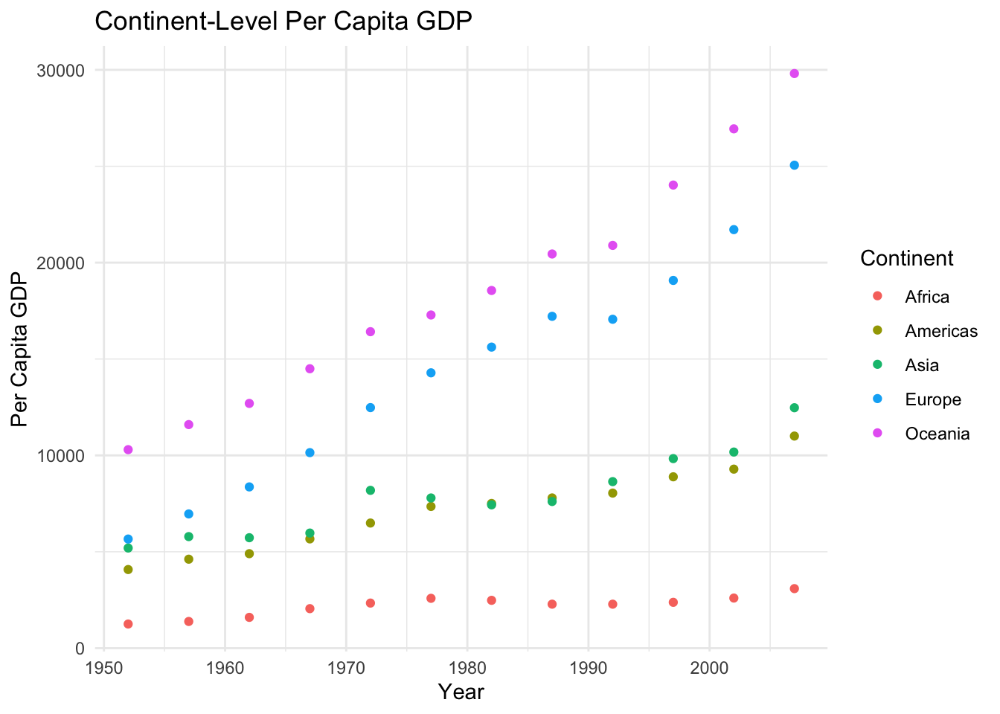
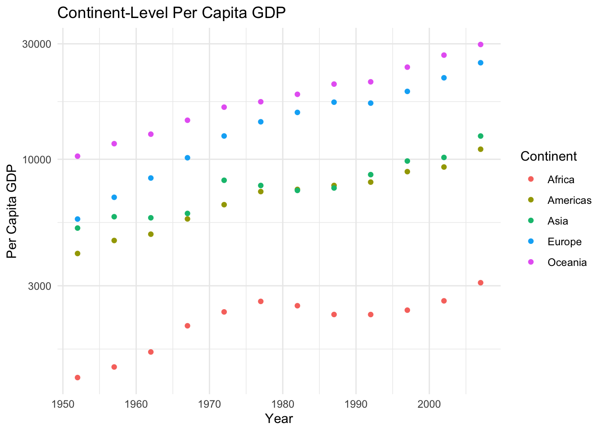
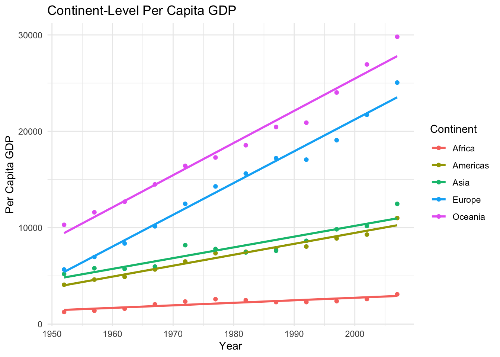

Code
library(tidyverse)
library(gapminder)
view(gapminder)library(tidyverse)
library(gapminder)
view(gapminder)In the new R project:
based on the plot, choose either regular or log transformed data, and use a linear regression to estimate annual change in per capita GDP OR log (per capita GDP) accounting for continent.
when done, render your quarto doc, then stage, commit, and push back to Github.
percapgdp <- gapminder %>%
group_by(continent, year) %>%
summarize(percapgdp = mean (gdpPercap))
percapgdp# A tibble: 60 × 3
# Groups: continent [5]
continent year percapgdp
<fct> <int> <dbl>
1 Africa 1952 1253.
2 Africa 1957 1385.
3 Africa 1962 1598.
4 Africa 1967 2050.
5 Africa 1972 2340.
6 Africa 1977 2586.
7 Africa 1982 2482.
8 Africa 1987 2283.
9 Africa 1992 2282.
10 Africa 1997 2379.
# ℹ 50 more rowsgdp_plot <- ggplot(data = percapgdp, aes(x = year, y = percapgdp, color = continent)) +
geom_point() +
labs(x = 'Year', y = 'Per Capita GDP', color = 'Continent', title = 'Continent-Level Per Capita GDP') +
theme_minimal()
gdp_plot
gdp_plot_log <- ggplot(data = percapgdp, aes(x = year, y = percapgdp, color = continent)) +
geom_point() +
labs(x = 'Year', y = 'Per Capita GDP', color = 'Continent', title = 'Continent-Level Per Capita GDP') +
scale_y_log10() +
theme_minimal()
gdp_plot_log
gdp_plot_lm <- ggplot(data = percapgdp, aes(x = year, y = percapgdp, color = continent)) +
geom_point() +
labs(x = 'Year', y = 'Per Capita GDP', color = 'Continent', title = 'Continent-Level Per Capita GDP') +
geom_smooth(method = lm, se = FALSE) +
theme_minimal()
gdp_plot_lm
linear_model <- lm((percapgdp) ~ continent, data = percapgdp)
summary(linear_model)
Call:
lm(formula = (percapgdp) ~ continent, data = percapgdp)
Residuals:
Min 1Q Median 3Q Max
-8808.4 -2021.0 88.5 1771.5 11188.6
Coefficients:
Estimate Std. Error t value Pr(>|t|)
(Intercept) 2194 1172 1.872 0.06650 .
continentAmericas 4942 1657 2.983 0.00425 **
continentAsia 5708 1657 3.445 0.00110 **
continentEurope 12276 1657 7.408 8.09e-10 ***
continentOceania 16428 1657 9.914 7.61e-14 ***
---
Signif. codes: 0 '***' 0.001 '**' 0.01 '*' 0.05 '.' 0.1 ' ' 1
Residual standard error: 4059 on 55 degrees of freedom
Multiple R-squared: 0.6897, Adjusted R-squared: 0.6671
F-statistic: 30.56 on 4 and 55 DF, p-value: 2.113e-13